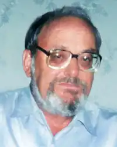

Василь Тимофійович Скуратівський народився на хуторі Великий Ліс Мединівської сільради Коростенського району. Його дитинство припало на повоєнні літа, коли підлітки змушені були завчасно підміняти батьків та старших братів, котрі не повернулися з війни. У 50-х роках закінчив десятирічку у сусідньому селі Обіходах.
Після закінчення факультету журналістики Київського держуніверситету ім. Т. Г. Шевченка в 1971 р. Василь Скуратівський працював у районних та обласних газетах, чимало їздив по країні, збирав фольклорні та етнографічні матеріали. На їх основі він опрацьовує свої чисельні публікації в періодиці та збірниках. Багато його праць було надруковано в збірниках "Отчий край", "Етнографія Києва і Київщини", "Традиції і сучасність", "Наука і культура України", "Полесье: Материальная культура", "Культура і побут населення України", "Древляни". Його фольклорні записи використовують упорядники багатотомного фундаментального видання "Українська народна творчість". З 1994 р. Василь Скуратівський заснував часопис "Берегиня", де він друкує багато своїх матеріалів, а також залучає до друку багатьох талановитих дослідників, як досвідчених так і молодих.
Щасливе поєднання в особі Скуратівського таланту художника слова та вченого-етнографа дало можливість привернути увагу громадськості до сучасної обрядовості. Та чи не найбільшою заслугою письменника і вченого є те, що він своїми публікаціями сприяв введенню в шкільні програми курсу народознавства. Однак найважливішими його досягненнями в українському народознавстві є окремі видання. Серед них особливе, етапне місце у творчій біографії автора посідає "Берегиня" (1987). Завдяки цій книзі українець відкрив себе, знайшов ще раз. Ця книга – розповідь про український народний побут, звичаї, що складалися, випробовувались на міцність протягом багатьох століть. Любов до рідної землі, повага до батьків, чесної праці, порядності у взаємостосунках – ось лейтмотив цих роздумів. Любити землю і працю на ній "бо без цього не буде щастя нам і дітям нашим ні на якій планеті", любити і берегти свій рід, мову і пісню, бо без них ми перетворимось на духовних жебраків – ось чому вчить книга. "Посвіт" – друга книга автора, логічне продовження і доповнення "Берегині" (1989). Ці дві книги принесли найбільше визнання і популярність їхньому авторові. Не забуває Скуратівський і про наймолодших своїх читачів, докладає всіх зусиль, "щоб діти стали народом". Його третя книга "Погостини" (1988) розрахована саме на них. Четверта книга "Покуть" (1992) присвячена пам’яті батька Тимофія Яковича. Книга містить народознавчі матеріали про знаменні віхи людського життя, давні українські звичаї і обряди, знайомить з багатьма питаннями духовної і матеріальної культури українців. Продовженням творів "Берегиня" та "Посвіт" є книга "Місяцелік" (1993). Автор зібрав багатющий матеріал про походження назв українських місяців та пов’язані з ними численні прислів’я і приказки, зразки завбачень погоди, народні і релігійні свята з поширеним їх датуванням, а також розвідки про найцікавіші обряди. Потім з’явились "Дідух" (1995), книга оповідей-досліджень про 100 найосновніших свят народу – "Святвечір" (1994) у двох томах, "Русалії" (1996), "Кухоль меду" (1999). Не можна не відзначити окремо цілісної підсумкової енциклопедичної праці з української дохристиянської міфології "Русалії", в якій Скуратівський намагається відтворити, іноді через своє власне бачення, дохристиянську міфологію українців, описати найдавніші міфологічні вірування, обряди, народну символіку. Творчий доробок В. Скуратівського великий. Проте він ніколи не зупинявся на досягнутому .Опрацьовував нові архівні матеріали, продовжував писати статті. Вчений часто зустрічався з молоддю, збираючи великі студентські аудиторії. Завдяки популяризації своїх ідей в багатьох навчальних закладах країни, в тому числі в Житомирському педуніверситеті ім. І. Франка, читаються курси народознавства, етнографії, створено народознавчі кабінети. В. Скуратівського запрошували управлінські громади Чикаго і Нью-Йорка, Оттави й Едмонтона. І скрізь його палке слово знаходило відгук у серцях щирих патріотів України, тих, кому болить її доля, хвилює минуле і прийдешнє. Василь Тимофійович плекав надію провести на Житомирщині комплексну науково-дослідну експедицію. В останні роки Василь Тимофійович плідно співпрацював з видавництвом "Техніка". Тут побачили світ останні за його життя книги – "Український народний календар", "Я Вас, бджоли, благословляю…". Попереду були нові цікаві творчі плани і задуми, які, на жаль, залишились нереалізованими. 16 грудня 2005 року Василь Скуратівський помер.